Connect to your cloud server with SSH for this exercise.
Horizontally scale a web application with nginx as a load balancer
The goal of this exercise is to show how a web application can be scaled to handle a growing amount of work by using systemd unit templates and configuring nginx as a load balancer.
This guide assumes that you are familiar with reverse proxying, that you have nginx installed and
running on a server, and that you have a DNS wildcard entry preconfigured to
make various subdomains (e.g. *.jde.archidep.ch in this guide) point to that
server.
On this page
Table of contents
 Legend
Legend
Parts of this exercise are annotated with the following icons:
-
 A task you MUST perform to complete the exercise
A task you MUST perform to complete the exercise
-
 Optional step that you may perform to make sure that
everything is working correctly, or to set up additional tools that are not required but can
help you
Optional step that you may perform to make sure that
everything is working correctly, or to set up additional tools that are not required but can
help you
-
 Advanced tips on how to go further (or
challenges!)
Advanced tips on how to go further (or
challenges!)
 The end of the exercise
The end of the exercise-
 The architecture of the software you ran or
deployed during this exercise
The architecture of the software you ran or
deployed during this exercise
-
 Troubleshooting tips: how to fix common problems you might
encounter
Troubleshooting tips: how to fix common problems you might
encounter
Requirements
The application you will deploy is FibScale, a web application that computes Fibonacci numbers.
The following requirements should be installed on your server:
-
Ruby 3.2+ and compilation tools
You can install those by running the following commands:
$> sudo apt update$> sudo apt install ruby-full build-essential -
Bundler, a command-line tool that downloads Ruby gems (i.e. packages)
Once your have Ruby installed, you can install Bundler with the
gemcommand:$> sudo gem install bundler
You can check that everything has been correctly installed with the following commands:
# Ruby 3.x will be installed by default on Ubuntu 24.04:
$> ruby --version
ruby 3.x.y (202v-wx-yz revision 0000000000) [x86_64-linux-gnu]
Bundler is Ruby’s package manager much like Composer for PHP or npm for Node.js.
Deploy the application
Let’s start by deploying the application and seeing it in action. Clone the repository on your server and install the required dependencies:
cd
git clone https://github.com/ArchiDep/fibscale.git
cd fibscale
bundle config set --local deployment 'true'
bundle install
Create a systemd unit file named /etc/systemd/system/fibscale.service (e.g.
with nano) to execute the application:
[Unit]
Description=Fibonacci calculator
[Service]
ExecStart=/usr/local/bin/bundle exec ruby fibscale.rb
WorkingDirectory=/home/jde/fibscale
Environment="FIBSCALE_PORT=4202"
User=jde
Restart=on-failure
[Install]
WantedBy=multi-user.target
Replace jde with your username in the WorkingDirectory and User options.
Enable and start your new service:
$> sudo systemctl enable fibscale
$> sudo systemctl start fibscale
You can check that it is running with sudo systemctl status fibscale.
Create the nginx site configuration /etc/nginx/sites-available/fibscale (e.g.
with nano) to expose this component:
server {
listen 80;
server_name fibscale.jde.archidep.ch;
location / {
proxy_pass http://127.0.0.1:4202;
}
}
Replace jde with your name and archidep.ch with your assigned domain in the
server_name directive.
Enable that configuration with the following command:
$> sudo ln -s /etc/nginx/sites-available/fibscale /etc/nginx/sites-enabled/fibscale
Check and reload nginx’s configuration:
$> sudo nginx -t
$> sudo nginx -s reload
You should now be able to access the FibScale application at http://fibscale.jde.archidep.ch and see how it works.
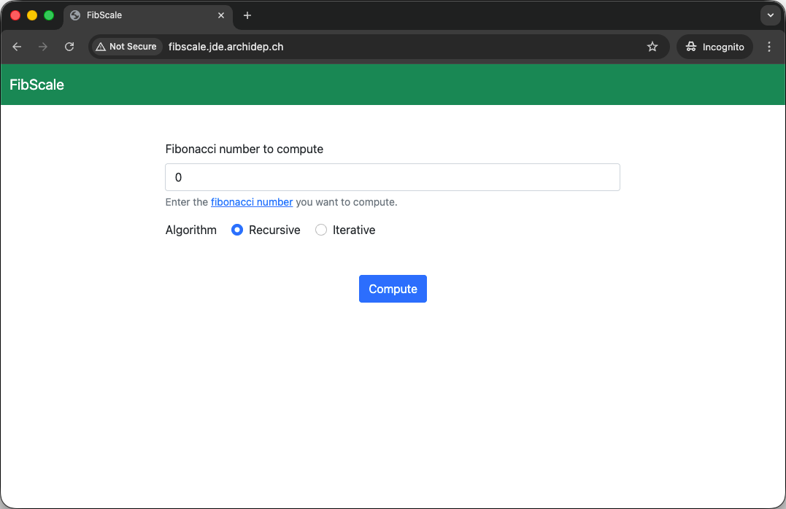
As you can see, FibScale will compute Fibonacci numbers using various algorithms, and display how much time each computation took.
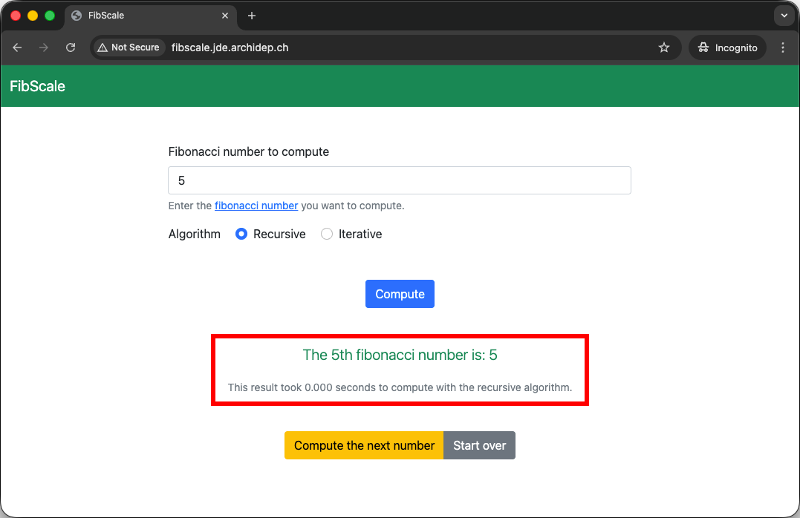
Why is the iterative algorithm much faster for larger numbers? For those interested in programming, FibScale implements two algorithms to compute Fibonacci numbers:
- The naive recursive algorithm.
- The iterative algorithm.
We call the recursive algorithm “naive” because although it is an easier
implementation to understand and implement, it has exponential time
complexity (and space complexity) of
O(2^n) because each function call produces two recursive function
calls. This means that it takes exponentially more time and memory to compute
Fibonacci numbers as you increase the number. This is why FibScale will refuse
to compute a Fibonacci number higher than 40 with the recursive algorithm
because that might hog your server’s CPU for too long or exhaust its memory.
The iterative algorithm uses a smarter implementation that avoids the
exponential time complexity of the naive recursive algorithm by remembering each
computed Fibonacci number as it moves along. This algorithm has a time
complexity of O(n), meaning the time increase is linear instead of
exponential. Since it uses a fixed number of variables and does not use
recursion, it has a space complexity of O(1), meaning it consumes a fixed
amount of memory regardless of which Fibonacci number you are computing.
Read the articles Program for Fibonacci numbers and Fibonacci series in C for more detailed explanations.
Artificially slow down the application
To better show the benefits of scaling, we will configure the FibScale
application to simulate each computation being very slow. As you can see in its
documentation, you can do that by setting the
$FIBSCALE_DELAY environment variable to a number of seconds. Each computation
will be artificially delayed by that amount of time.
Once our application is slower, we will see how we can use horizontal scaling to make it faster.
Why not compute a very high Fibonacci number instead of adding a fake delay? If you have played with FibScale, you may have noticed that the higher the Fibonacci number you try to compute, the more time it takes with the recursive algorithm. For example, computing the 37th Fibonacci number with the recursive algorithm usually takes more than 3 seconds with the Azure servers recommended for this course.
Why then introduce an artificial delay instead of simply computing a high Fibonacci number?
Because scaling an application is a complex task and you may not do it the same way depending on the cause of the slowdown (e.g. CPU-bound or I/O-bound). If we slow down the computation by consuming more CPU (i.e. computing a high Fibonacci number), we may hit the limits of our server’s CPU(s) too quickly. By artificially slowing down computation without consuming more CPU or other resources, we can simplify the demonstration and concentrate on configuring load balancing with nginx.
For more information, see the additional explanations at the end of the exercise.
Add the following line to the [Service] section of the
/etc/systemd/system/fibscale.service systemd unit file:
Environment="FIBSCALE_DELAY=1"
Reload the systemd configuration and restart your service:
$> sudo systemctl daemon-reload
$> sudo systemctl restart fibscale
Test the application at http://fibscale.jde.archidep.ch again and observe that every computation now takes at least one second.
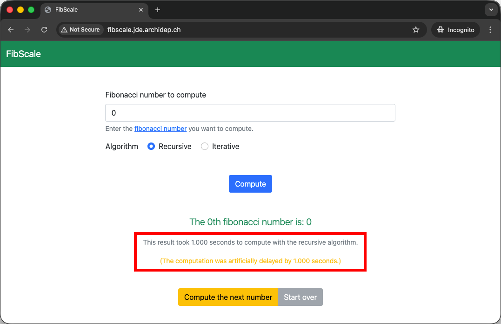
We now have a simulation of a slow application. Or do we? As the saying goes:
- Don’t guess, measure!
Load testing the application
You will use Locust, an open source load testing tool written in Python, and use it to measure the performance of the FibScale application. Load testing is the process of putting demand on a system and measuring its response time and error rate. In this case, we will simulate multiple users trying to use FibScale concurrently, and see how much time it takes for each user to get a response.
Do not stray too far from the instructions below when load testing when it comes to the number of users. You are going to simulate many users sending requests to your application concurrently. If you simulate too many users, you may bring down your server, or your test may easily be misconstrued as a DoS attack by the Azure cloud. Your server may end up being blacklisted.
Deploy a Locust instance
To install Locust, you need Python 3 and pip, a Python package manager, installed on your server. You can do that with the following commands:
$> sudo apt install python3 python3-pip
APT may tell you that these packages are already installed. That’s fine.
You can then install Locust with pip:
$> sudo apt install python3-locust
This will add the locust command to your system:
$> locust -V
locust from /usr/lib/python3/dist-packages/locust (python 3.12.3)
To use Locust, you would normally write a locustfile describing a load testing scenario, i.e. users and their behavior as they access your application. Fortunately for you, the FibScale application already comes with a pre-configured locustfile which simulates a user that requests the computation of the 100th Fibonacci number every second.
As Locust’s documentation states, you simply need to
run the locust command in a directory containing a locustfile named
locustfile.py, and Locust will be ready to run your load testing scenario.
Let’s create a systemd unit file named
/etc/systemd/system/fibscale-locust.service that does just that:
[Unit]
Description=Locust instance to test FibScale
After=fibscale.service
[Service]
ExecStart=/usr/bin/locust
WorkingDirectory=/home/jde/fibscale
User=jde
Restart=on-failure
[Install]
WantedBy=multi-user.target
Replace jde with your name in the WorkingDirectory and User options.
Enable and start your new service:
$> sudo systemctl enable fibscale-locust
$> sudo systemctl start fibscale-locust
You can check that it is running with sudo systemctl status fibscale-locust.
Create the nginx site configuration file
/etc/nginx/sites-available/fibscale-locust to expose Locust, which listens on
port 8089 by default:
server {
listen 80;
server_name locust.fibscale.jde.archidep.ch;
location / {
proxy_pass http://127.0.0.1:8089;
}
}
Replace jde with your name and archidep.ch with your assigned domain in the
server_name directive.
Enable that configuration with the following command:
$> sudo ln -s /etc/nginx/sites-available/fibscale-locust /etc/nginx/sites-enabled/fibscale-locust
Check and reload nginx’s configuration:
$> sudo nginx -t
$> sudo nginx -s reload
You should now be able to access Locust at http://locust.fibscale.jde.archidep.ch.
Start load testing the application with a small number of users
The Host field tells Locust what the base URL for the load testing scenario
is. Enter the address of FibScale: http://fibscale.jde.archidep.ch. Set the
Number of users to 1 and the Ramp Up to 1 for now, and run the scenario.
Replace jde with your name and archidep.ch with your assigned domain in the
Host field.
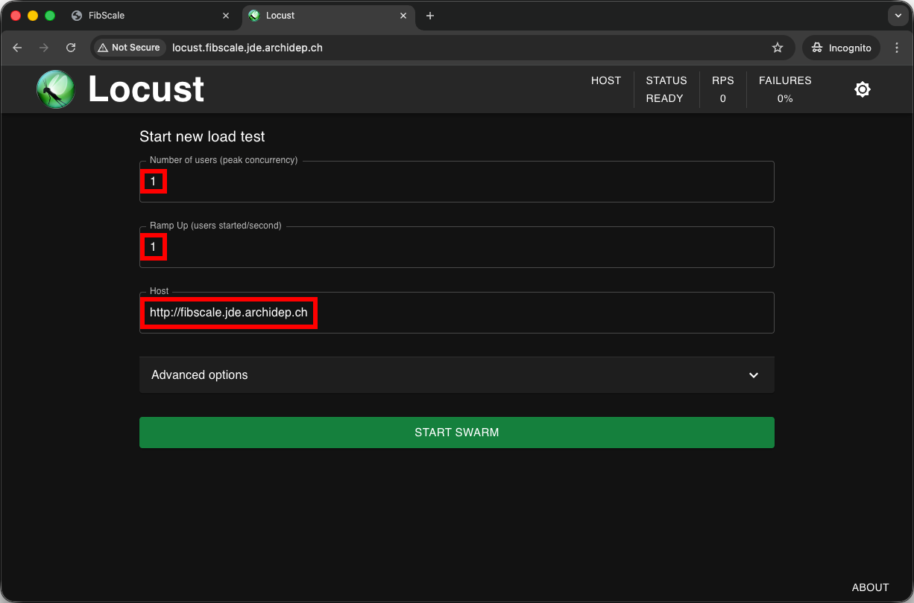
The Statistics tab shows basic numbers about the number of requests made (in total and per second) and how much time they take
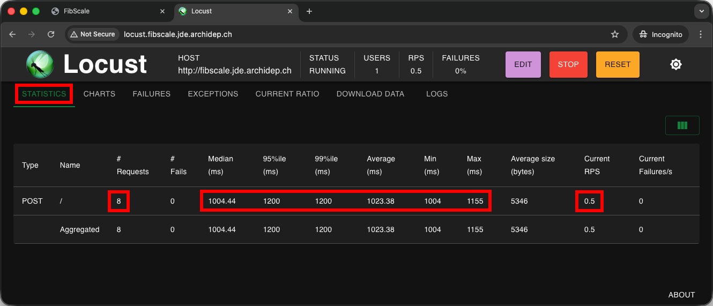
The Charts tab is more interesting: it shows the same information as line charts.
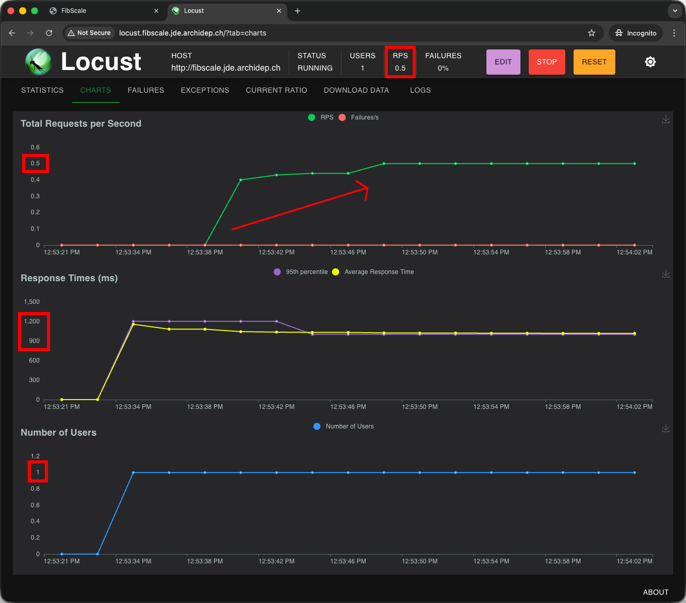
You should quickly see the number of requests per second (RPS) stabilizing at ~0.5, which is what we would expect with 1 user: the user requests the computation of the 100th Fibonacci number, which takes about 1 second with our artificial delay in place, and we can see that in the response time chart. Then the user waits 1 second before repeating the request as defined by the load testing scenario. Our single users ends up making 1 request every 2 seconds, which is 0.5 RPS.
Click the Edit button in the top bar and change the Number of users to 2 without changing the ramp up.
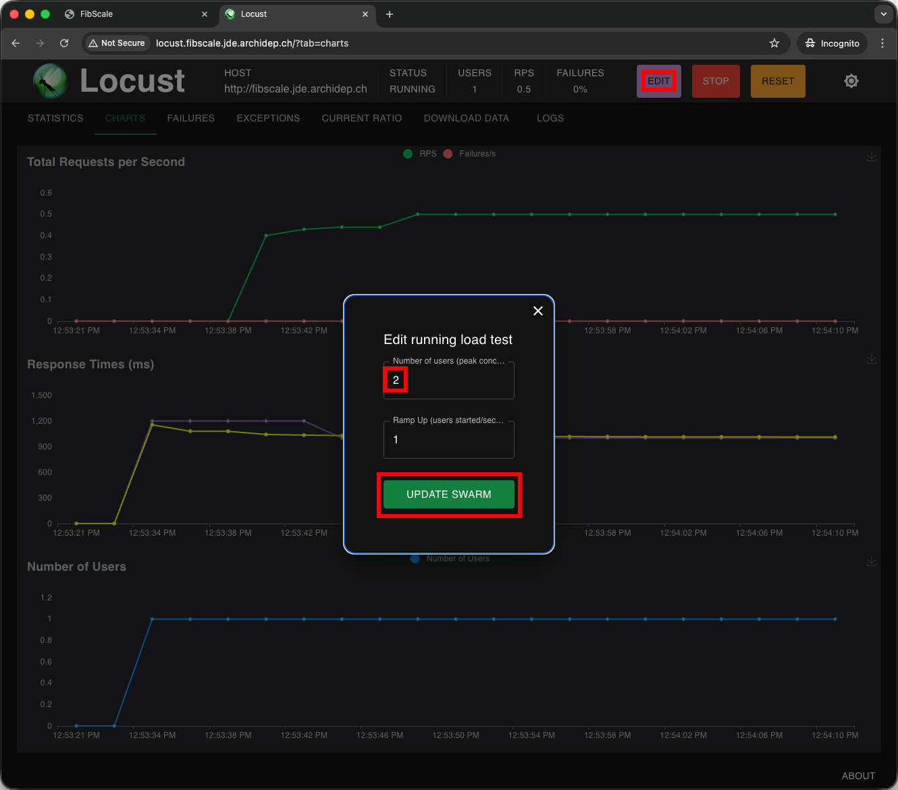
With 2 users making a request every 2 seconds each, you should see the number of requests per seconds stabilizing at ~1. Everything is as we expect so far.
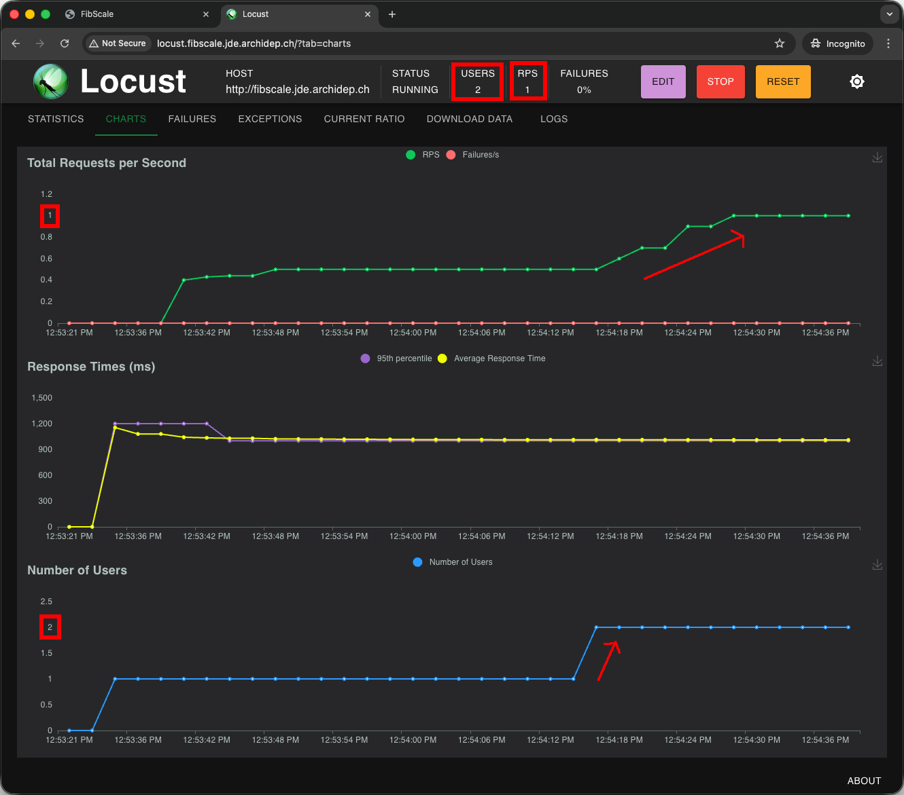
Increase the load
Now change the Number of users to 10 and leave the Ramp Up to 1. This will add 8 more users to our existing 2.
The Ramp Up is the number of new users added every second, meaning that it will take 8 seconds (1 per new user) to reach our target number of 10 users starting from the 2 we already have.
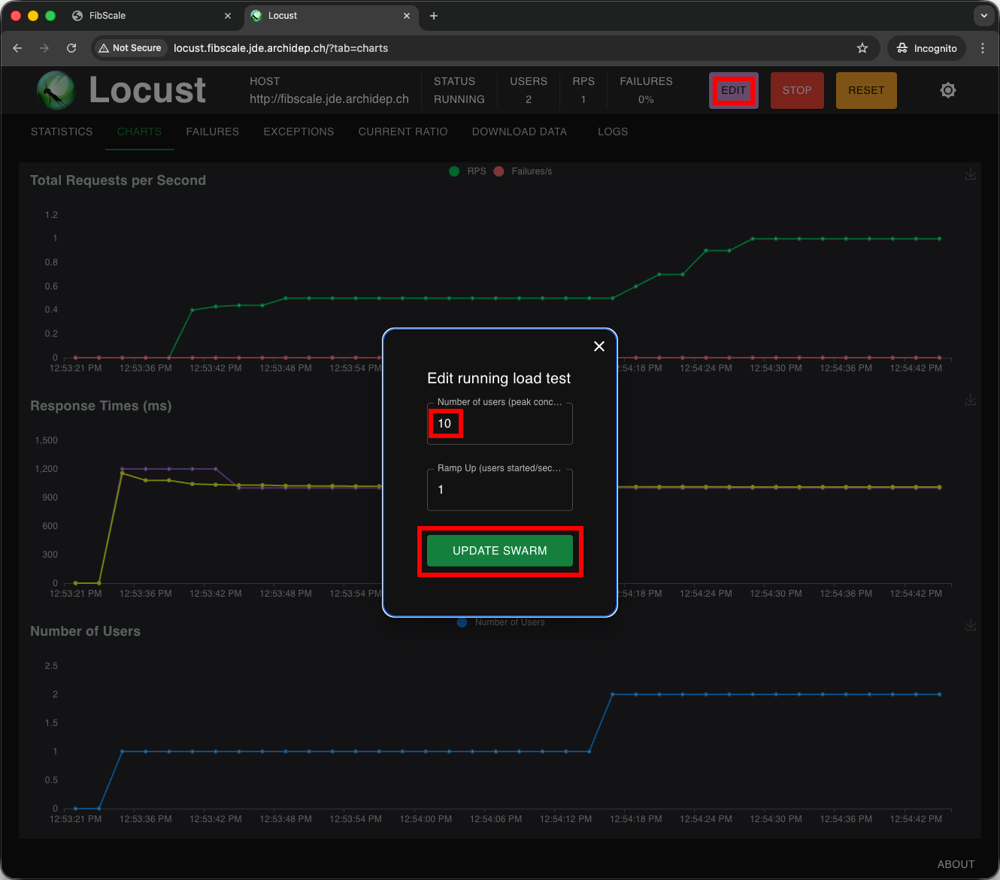
The number of requests per second should remain unchanged while the response time should increase to ~9 seconds.
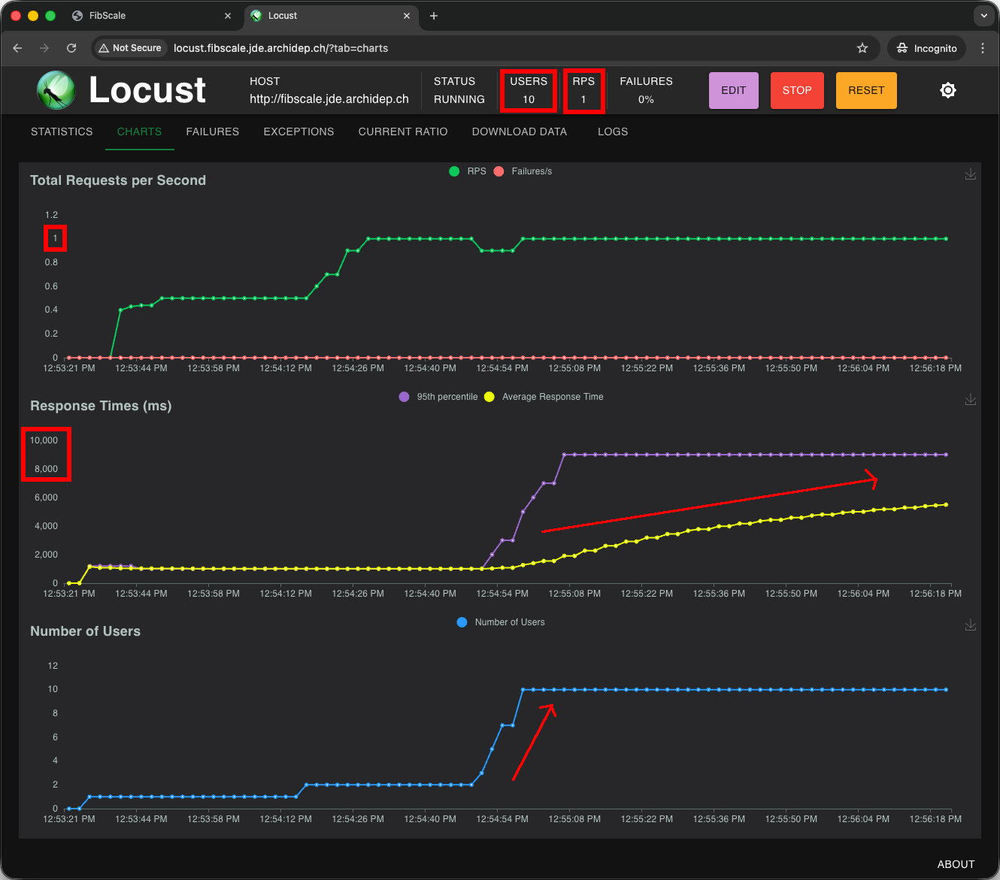
Try computing a Fibonacci number yourself again. You will have to wait a while for a result because the application is busy responding to the simulated Locust users.
Why is that?
The FibScale application has been deliberately implemented so that it runs in a single execution thread on one CPU core, meaning it can only serve one request at a time. As soon as the computation of a Fibonacci number starts for one of our users, the 9 other users have to wait until that is done. Then the computation starts for the second user, and the remaining users have to wait in line again.
computation 1 --1s--
computation 2 --1s--
computation 3 --1s--
computation 4 --1s--
computation 5 --1s--
computation 6 --1s--
computation 7 --1s--
computation 8 --1s--
computation 9 --1s--
------------------------------------------------------ 9s total
In the end , each user ends up waiting for about 9 seconds before getting a response.
You may now stop the load testing scenario.
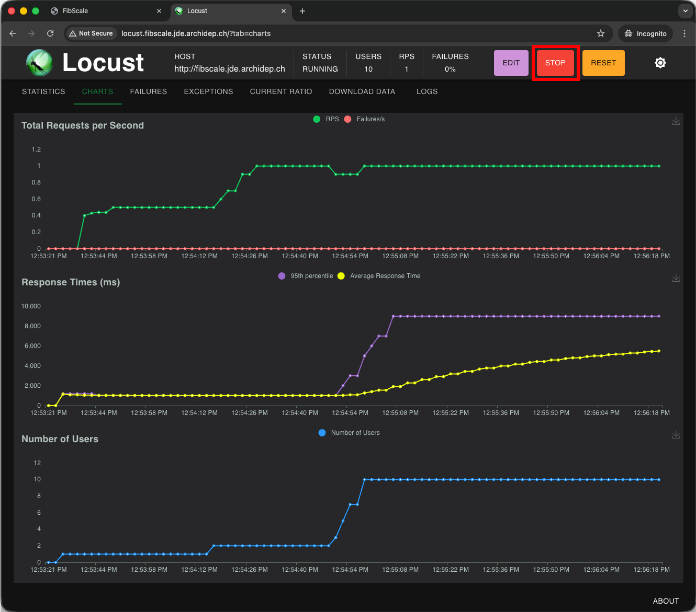
What to do?
Our application is far too slow and the user experience is horrible. We have to speed it up!
Let’s assume that:
- We don’t know Ruby and cannot find a way to speed up the application by changing its implementation.
- The slowness is not caused by a lack of resources on the server (CPU, memory or I/O performance).
These assumptions do not necessarily represent a real-world scenario, but since they are true for this exercise, it will allow us to perform scaling on our single server.
If we have resources to spare on the server, and one instance of the FibScale application cannot serve enough users at the same time, let’s spin up more instances and see what happens.
Horizontally scale the FibScale application
First, stop and disable the fibscale service:
sudo systemctl stop fibscale
sudo systemctl disable fibscale
To run multiple instances of FibScale, you could create separate systemd services, but systemd also supports unit templates, i.e. units that can be started multiple times based on a template.
Transform the FibScale systemd unit into a template
To turn the fibscale service into a template, you must rename the
fibscale.service file to fibscale@.service:
$> sudo mv /etc/systemd/system/fibscale.service /etc/systemd/system/fibscale@.service
When a template is started, it will have access to the instance parameter
named %i. You can use that parameter in the template definition, e.g. to
pass it to the application or change the port the application listens on.
Modify /etc/systemd/system/fibscale@.service as follows:
- Remove the
[Install]section and theWantedByoption it contains. We will no longer start thefibscaleservice directly once it is a template. - Add the
%iparameter at the end of the description. - Add the
%iparameter at the end of theExecStartcommand to pass it to the FibScale application.
As you can see in FibScale’s documentation, passing an integer to the application will change the color of its navbar to help identify different instances.
- Change the value of the
$FIBSCALE_PORTenvironment variable from the fixed port4202to the dynamic port4200%i. Since we intend on running multiple instances of the FibScale application, they need to listen on different ports (e.g. 42001, 42002). - Add a
PartOf=fibscales.targetoption to the[Unit]section. A systemd target is a group of units. Thisfibscales.targetgroup does not exist yet, but we will soon create it.
The new version of the service template should look something like this:
[Unit]
Description=Fibonacci calculator instance %i
PartOf=fibscales.target
[Service]
ExecStart=/usr/local/bin/bundle exec ruby fibscale.rb %i
WorkingDirectory=/home/jde/fibscale
Environment="FIBSCALE_PORT=4200%i"
Environment="FIBSCALE_DELAY=1"
User=jde
Restart=on-failure
Let’s now create the systemd target file /etc/systemd/system/fibscales.target
file with the following contents:
[Unit]
Description=Fibonacci calculator cluster
Requires=fibscale@1.service
[Install]
WantedBy=multi-user.target
This will run one instance of our templated fibscale@ unit with the
instance parameter 1, resulting in a service named fibscale@1.
Enable and start the target just like you would a service:
$> sudo systemctl enable fibscales.target
$> sudo systemctl start fibscales.target
You can check the status of a target like you would a service:
$> sudo systemctl status fibscales.target
You can also check the status of each individual instance:
$> sudo systemctl status fibscale@1
Now that FibScale is up and running again, update the nginx site configuration
file /etc/nginx/sites-available/fibscale to support multiple FibScale
instances. There is only one for now, but we will add more soon enough.
You need to define an nginx upstream which is a group of
servers, basically a list of addresses where our FibScale applications can be
reached. We only have one service running for now, fibscale@1. Since the
instance parameter %i has the value 1 and we set the value of the
$FIBSCALE_PORT environment variable to 4200%i, that instance of the service
listens on port 42001. Let’s define that upstream and update the
proxy_pass directive to point to it:
# Group of FibScale applications.
upstream fibscale {
server 127.0.0.1:42001;
}
server {
listen 80;
server_name fibscale.jde.archidep.ch;
location / {
# Proxy to the upstream.
proxy_pass http://fibscale;
}
}
Test and reload nginx’s configuration:
$> sudo nginx -t
$> sudo nginx -s reload
Access the FibScale application at http://fibscale.jde.archidep.ch again, and note that the navbar has changed color (because of the instance parameter passed as argument).
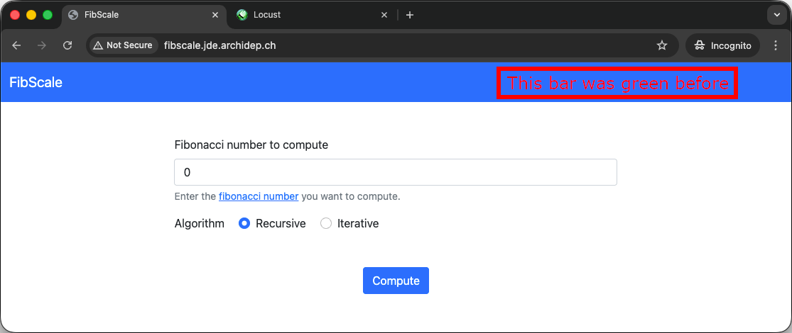
Load-test the new FibScale service
Access Locust at http://locust.fibscale.jde.archidep.ch and run the same load testing scenario as before: test the Host http://fibscale.jde.archidep.ch with the Number of users set to 10 and the Ramp Up set to 1.
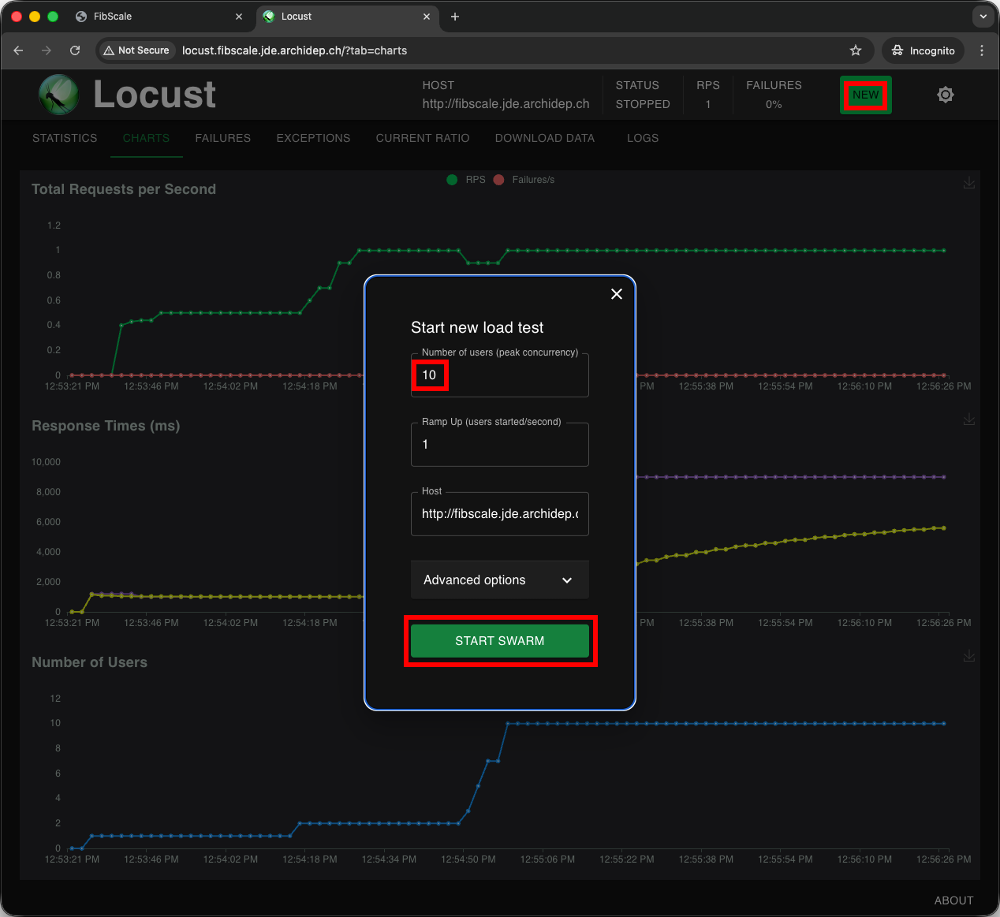
You should see similar numbers as before. After all, we haven’t really changed anything yet: there is still only one FibScale application responding to requests.
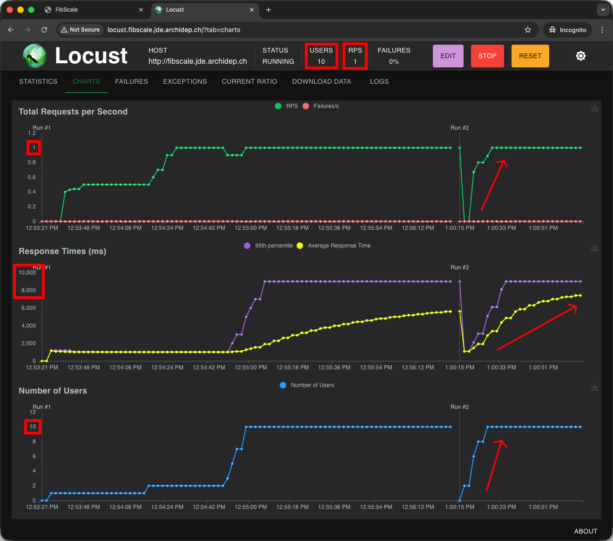
Spin up more instance of the FibScale application
To launch more instances of the FibScale application, simply update the
/etc/systemd/system/fibscales.target file to run more instances of the
service. Let’s run three:
[Unit]
Description=Fibonacci calculator cluster
Requires=fibscale@1.service fibscale@2.service fibscale@3.service
[Install]
WantedBy=multi-user.target
To take these changes into account, reload the systemd configuration and start
the fibscales.target group again (no need to restart it):
$> sudo systemctl daemon-reload
$> sudo systemctl start fibscales.target
You should then be able to check the status of each instance separately:
$> sudo systemctl status fibscale@1
$> sudo systemctl status fibscale@2
$> sudo systemctl status fibscale@3
You should not see any change in Locust yet, because nginx is not yet aware of the additional instances.
Configure nginx to balance the load among the available FibScale instances
Update the upstream definition in the nginx site configuration file
/etc/nginx/sites-available/fibscale to add your new FibScale instances. Since
the instance parameter %i is 2 and 3 for our 2 new instances, we know
they’re listening on ports 42002 and 42003:
upstream fibscale {
server 127.0.0.1:42001;
server 127.0.0.1:42002;
server 127.0.0.1:42003;
}
Test and reload nginx’s configuration:
$> sudo nginx -t
$> sudo nginx -s reload
Check Locust again and you should quickly see the number of requests per second increase to 3 and the response time decrease.
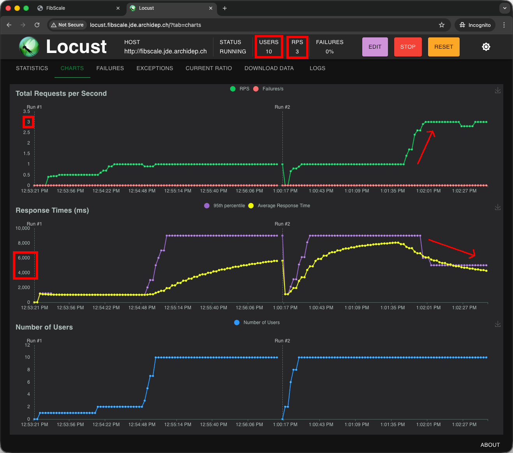
If you access the FibScale application at http://fibscale.jde.archidep.ch and reload the page a few times, you will see that the navbar changes color, indicating that nginx correctly distributes your requests to the 3 FibScale instances.
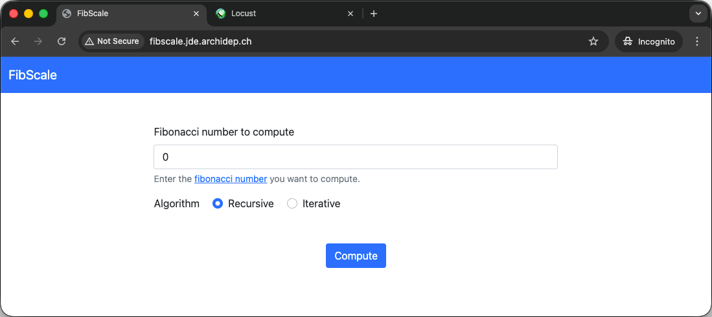
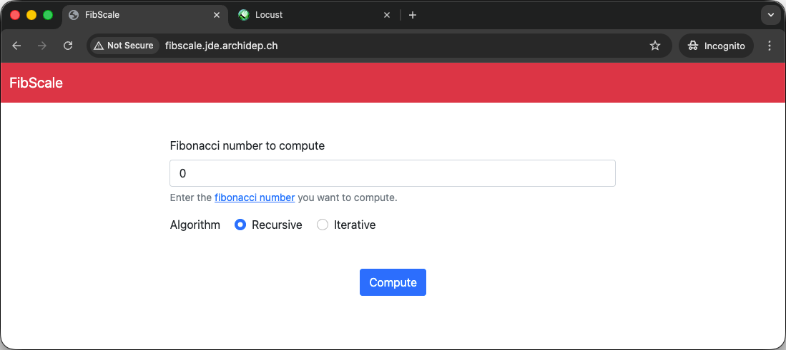
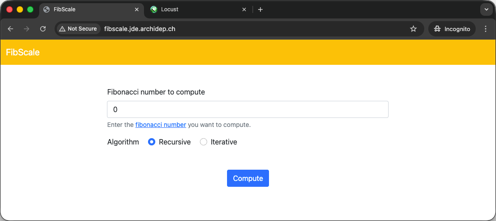
Now that the load is distributed among the 3 instances, our users’ computations are executed 3 at a time in parallel. For the same number of requests, it will only take a third of the time compared to before.
computation 1 --1s--
computation 2 --1s--
computation 3 --1s--
computation 4 --1s--
computation 5 --1s--
computation 6 --1s--
computation 7 --1s--
computation 8 --1s--
computation 9 --1s--
------------------ 3s total
Not the solution to all your problems
This exercise is intended as a demonstration of how to perform load balancing with nginx. But horizontal scaling is not necessarily a silver bullet for all your performance problems, especially on a single server.
Actually, deploying more instances of your application on the same server may even make the problem worse depending on the cause!
Three of the main causes of performance issues are: using too much CPU, not having enough memory, performing too much I/O (input/output, e.g. disk access). Whether horizontal scaling will work depends on the cause and on many other factors:
-
If your application is slow because it uses too much CPU (e.g. it makes many complex calculations), increasing the number of instances may not increase performance. It may even decrease it if your server’s CPU core(s) becomes overloaded. It will depend on the following factors:
-
Does your server have only one CPU core?
If you are running a CPU-bound application on a machine with one CPU core, spinning up multiple instances of the application will only increase performance as long as you have CPU capacity to spare.
Once CPU usage reaches 100%, running more instances is unlikely to improve performance because one core cannot run things in parallel. It can run things concurrently using multithreading, but that will probably not be enough change the overall throughput. Performance will start decreasing as you add more instances.
-
Does your server have multiple CPU cores?
-
Is the application single-threaded (i.e. it can only serve one request at a time)? This depends on which programming language it is implemented in and how it is implemented.
In this case, spinning up more instances will probably increase performance because the different cores can execute your code in parallel. But it will depend on how many instances you launch and on the other programs that may also be consuming CPU capacity on your server. At some point all of the CPU cores will be working at 100% capacity. Spinning up more instances then will only make the application (and the whole server) slower.
-
Is the application already parallelizing its work (i.e. a single instance executes natively on multiple CPU cores)?
In this case, spinning up more instance will only increase performance as long as you have CPU capacity to spare (i.e. all CPU cores are not yet at 100% usage). Once all CPU cores are fully utilized, running more instances will only make the application (and the whole server) slower.
-
-
-
If your application is slow because it consumes too much memory (e.g. it keeps references to a lot of data structures in memory), spinning up multiple instances may increase performance IF your server has memory capacity to spare.
If the memory usage is already close to 100%, the only thing you will achieve by spinning up more instances of your application is to bring down your whole server due to a lack of memory.
-
If your application is slow due to I/O (e.g. it regularly stores/retrieves data from disk or from a database), increasing the number of instances will probably increase performance, but only IF the I/O work can be parallelized, which depends entirely on what kind of work it is.
File access can be parallelized up to a point, but at some point there will be too many accesses for your server’s hard drive (or even SSD) to keep up.
Database servers are designed for concurrent access and can get the most out of your hardware, but again there is a limit, especially if it’s running on the same server as your application. At some point, running more instances will slow everything down.
 Optimizing the application
Optimizing the application
If your application consumes too much CPU or memory, or performs too much I/O, you can of course try to identify the bottlenecks in the implementation and optimize them to consume less resources. The application may then be able to process more requests or with a shorter response time.
This is a programming issue not directly related to architecture.
 Scaling further
Scaling further
Running the load testing tool (Locust) on the same server as the application your are testing is actually quite a bad idea. As you increase the load, Locust itself will start consuming CPU and memory to simulate users. This will slow down your server and make your application slower than it would normally be.
Regardless of the reason why your application is slow, you also have to make sure that it supports concurrency (concurrent access to files, to the database, etc) before you start spinning multiple instances, or else they might run into conflicts with each other.
Once you reach the limits of a single server, you can launch other servers and
run new instances of your application on those servers. In this exercise, you
have configured an nginx upstream that only contacts 127.0.0.1 (your server
itself), but nothing prevents you from pointing to other IP addresses (or domain
names) to spread the work among multiple servers. Of course, in this case you
have to make sure that your application supports being distributed across
multiple servers.
If you are very successful and reach 10,000+ concurrent clients, nginx may also become a bottleneck in your architecture and you may have to set up load balancing at the DNS level.
 Performance is hard!
Performance is hard!
In summary: performance is a very complex issue.
Again, before setting up anything: don’t guess, measure!
Again, be careful of issues such as rate limiting and (D)DoS protection when load testing. Load tests can look a lot like a DoS attack. You may inadvertently be banned by your cloud provider if you’re not careful.
 Scaling FibScale horizontally
Scaling FibScale horizontally
For your information, the FibScale application is very easy to scale horizontally on a single server because:
- It consumes little CPU (when using the iterative algorithm) and is neither
memory-bound nor I/O bound. Its slowness in this exercise is artificially
caused by a call to Ruby’s
sleepfunction. This consumes neither CPU nor memory, and does not perform any I/O. - It is pre-configured to be single-threaded so that spreading its work among multiple processes shows a clear improvement.
- Since each computation of a Fibonacci number is independent of the others, and there is no shared resource to access (e.g. a database), there is no issue with running multiple instances. They never need to talk to each other or synchronize access to anything.
What have I done?
You have installed a web application and identified a performance problem by using Locust, a load testing tool, to measure the average response time to clients.
To improve the user experience, you have performed horizontal scaling of your application by spinning up multiple instances and load balancing incoming requests to these various instances through nginx. This allows new instances to serve new clients while others are busy, increasing the overall throughput and decreasing the response time for each client.
Architecture
This is a simplified architecture of the main running processes and communication flow at the end of this exercise:
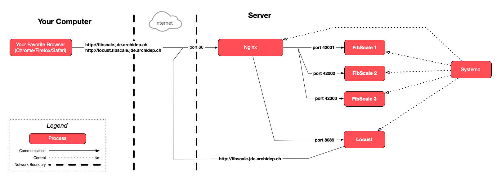
{kind=link}
Note
Note that this diagram only shows the processes involved in this exercise, ignoring the other applications (such as the PHP Todolist) we have also deployed on the server.